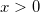

Lognpdf
Lognpdf-func
Definition
lognpdf(X,mu,sigma) returns values at X of the lognormal probability
density function with distribution parameters mu and sigma.
Parameters
- x (input, double)
- 
- mu (input, double)
- mean of the associated normal distribution .
- sigma(input, double)
- standard deviation of the associated normal distribution.
See Also
Cauchypdf,
exppdf,
gampdf,
Lappdf,
Normpdf,
Poisspdf